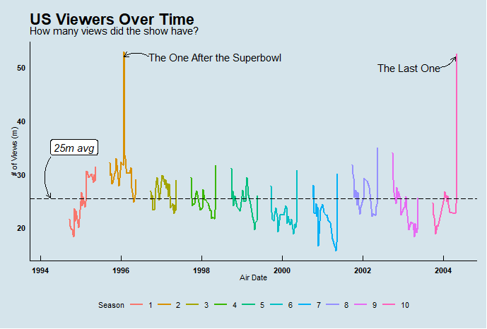
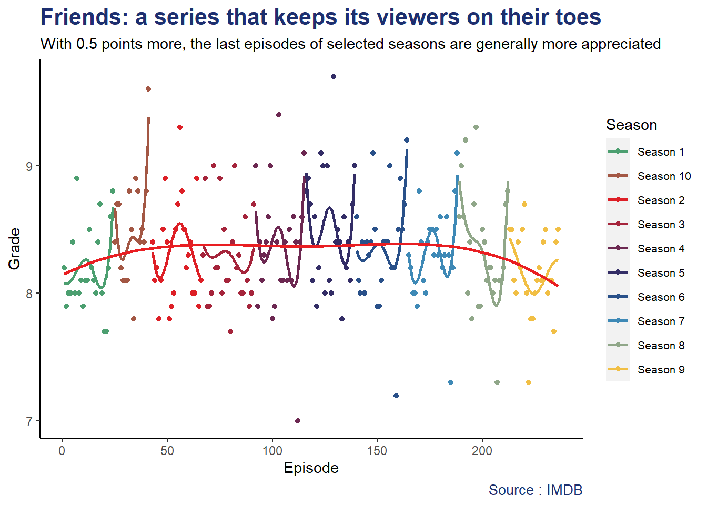

Description
::: {.panel-tabset}
1. A brief description of the show
Friends is an American television sitcom created by David Crane and Marta Kauffman, which aired on NBC from September 22, 1994, to May 6, 2004, lasting ten seasons.With an ensemble cast starring Jennifer Aniston, Courteney Cox, Lisa Kudrow, Matt LeBlanc, Matthew Perry and David Schwimmer, the show revolves around six friends in their 20s and early 30s who live in Manhattan, New York City. The original executive producers were Kevin S. Bright, Kauffman, and Crane.
Kauffman and Crane began developing Friends under the working title Insomnia Cafe between November and December 1993. They presented the idea to Bright, and together they pitched a seven-page treatment of the show to NBC. After several script rewrites and changes, including title changes to Six of One and Friends Like Us, the series was finally named Friends. Filming took place at Warner Bros. Studios in Burbank, California. The series was produced by Brightm Kauffman, Crane Productions and Warner Bros. Television.
2. A photo with the logo or a shot from the show itself.
3. A summary of some basic statistics
The series finale aired on May 6, 2004, and was watched by around 52.5 million American viewers, making it the fifth-most-watched series finale in television history and the most-watched television episode of the 2000s. The series was nominated for 62 Primetime Emmy Awards, winning the Outstanding Comedy Series award in 2002 for its eighth season. The show ranked no. 21 on TV Guide’s 50 Greatest TV Shows of All Time and no. 5 on Empire magazine’s The 50 Greatest TV Shows of All Time. In 1997, the episode “The One with the Prom Video” was ranked no. 100 on TV Guide’s 100 Greatest Episodes of All-Time. In 2013, Friends ranked no. 24 on the Writers Guild of America’s 101 Best Written TV Series of All Time, and no. 28 on TV Guide’s 60 Best TV Series of All Time.
4. A graph of the viewership over time

5. A graph of the episode-to-episode (or season-to-season) changes in viewership

6. Short description of the observed changes that includes inline references to numbers
viewership increased by 1 grade between seasons 1 and 10. It shows us more people watch friends tv shows between season 1 and season 10. Each season has average 8.5 grade.